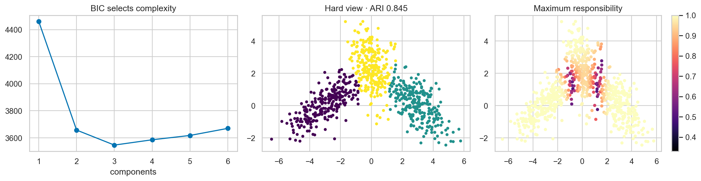

ML Hands-on Lab · 06 — Geometric and density-based
Gaussian mixture models
A Gaussian mixture represents a cloud as overlapping elliptical probability distributions. A point receives a responsibility for each component instead of pretending that every boundary is certain.
Read this page independently, then run the notebook cells in order. The figure below is a preserved historical notebook output; no model training was rerun for this editorial revision.
1. The experiment and its boundary
The notebook draws 260 points from each of three known two-dimensional Gaussians, for 780 rows. Their covariance matrices tilt and stretch the groups in different directions, and the groups overlap. The model sees only coordinates; simulation labels are reserved for evaluation.
All 780 rows are standardized and fitted together. Models with one through six full-covariance components are compared using BIC on that same cloud. This is an in-sample density-model selection exercise, not an estimate of supervised performance on unseen rows.
2. The mechanism
Each component has a mean μ, covariance Σ and mixing weight π. The probability density at a point is a weighted sum of component densities. Expectation-maximization alternates between two operations: assign fractional membership using the current parameters, then recompute parameters using those fractional counts.
p(x) = Σₖ πₖ N(x | μₖ, Σₖ)
rᵢₖ = πₖ N(xᵢ | μₖ, Σₖ) / p(xᵢ)
Nₖ = Σᵢ rᵢₖ; μₖ = Σᵢ rᵢₖ xᵢ / Nₖ
The M-step also updates each covariance from weighted deviations around its mean and sets πₖ=Nₖ/n. The next E-step recomputes responsibilities. Multiple initializations reduce dependence on one local optimum; convergence means this optimization stopped improving, not that the mixture discovered a unique true grouping.
3. Work through a tiny example
For a point whose two component densities are .06 and .03, equal mixing weights produce unnormalized contributions .03 and .015. Dividing each by .045 gives responsibilities 2/3 and 1/3. The hard assignment chooses the first component but hides that uncertainty.
For two observations at 0 and 10 with responsibilities .8 and .2 for a component, the updated mean is (.8×0 + .2×10)/(.8+.2) = 2. EM uses both observations with different weights; it does not discard the second one.
4. Settings that change this experiment
| Notebook setting | What it changes |
|---|---|
| Components: 1 through 6 | More components improve flexibility but add parameters. Use the BIC curve rather than assuming the generating count is always recovered. |
| covariance_type="full" | Full covariance permits tilted ellipses. Spherical uses one variance per component; diagonal cannot rotate an ellipse; tied shares covariance between components. |
| n_init=5; random_state=0 | Several starts help with local optima. Inspect convergence and stability across starts rather than treating one fit as definitive. |
5. The actual notebook operation
These are the actual core operations from the matching notebook, reformatted for readability. They use the data, imports and variables defined in earlier cells; open the notebook to execute the complete experiment.
Notebook cell 10 · counting all cells from 1
Xs = StandardScaler().fit_transform(X)
ks = range(1, 7)
models = {k: GaussianMixture(n_components=k, covariance_type='full', n_init=5, random_state=SEED).fit(Xs) for k in ks}
print('Scaled shape:', Xs.shape)Notebook cell 12 · counting all cells from 1
bics = [models[k].bic(Xs) for k in ks]
chosen = list(ks)[int(np.argmin(bics))]
model = models[chosen]
prob = model.predict_proba(Xs)
labels = prob.argmax(1)
print('BIC:', dict(zip(ks, np.round(bics, 1))), 'chosen:', chosen, 'converged:', model.converged_)6. Baseline and what the metrics mean
BIC = −2 log likelihood + p log n, where p is the number of free parameters and n is the row count. Lower is better: fit must improve enough to pay for complexity. This criterion uses the fitted cloud, not a hidden test set. For K full-covariance components in two dimensions, the parameter count is 2K + 3K + (K−1) = 6K−1.
The notebook also prints ARI against simulation labels, with a chance reference near 0. ARI measures hard partition agreement; it does not score uncertainty calibration or held-out density. Those are separate questions.
7. Read the historical figure

- Left: the historical BIC curve reaches its minimum at three components. Additional components in that run improve flexibility without enough likelihood benefit to justify their penalty.
- Middle: the historical hard partition reports ARI .845. Overlapping generative components can remain ambiguous even when the density model is appropriate.
- Right: maximum responsibility is lower around overlaps. This is uncertainty within the fitted mixture assumptions, not a calibrated probability that a real-world category is correct.
8. Break the assumption
The notebook fits a three-component spherical model and an eight-component full-covariance model. The spherical model cannot represent each group’s tilt; compare its hard assignments and ARI with the retained full model. The eight-component model can divide a smooth population into extra pieces; compare BIC rather than rewarding raw flexibility.
The variable name “overfit” describes the stress-test intention, not proof from unseen data. Lower held-out likelihood, unstable components or poorly behaved responsibilities on fresh draws would provide stronger evidence of overfitting. Gaussian components also need not correspond to meaningful categories in non-Gaussian data.
9. Exercises with a decision to explain
- Fit spherical, diagonal, tied and full covariance models over the same component grid. Compare BIC within the same data transformation and inspect the resulting shapes.
- Pick a point near an overlap and print its entire responsibility vector. Explain what the maximum-probability label throws away.
- Add a small set of distant outliers and rerun. Inspect changes in means, covariance sizes and responsibilities; a Gaussian mixture can spend components modeling outliers.
10. Run and inspect
Change one assumption at a time, keep the appropriate evaluation boundary, and compare the actual results. A baseline win or an inconclusive result is useful evidence.